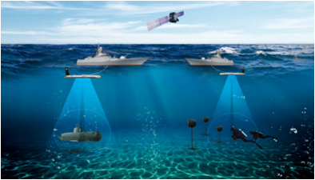

Multi-beam side scan sonar is a specially designed for military system applied to multi beam technology with high resolution imaging in this field. On each side of a towfish simultaneously generates multi beam with advanced beam forming techniques and shows an extremely sharp along track resolution even when being towed at high speed with full bottom coverage.
Applications
- Geographical surveys
- Route / Q-route surveys
- Mine & Submarine hunting on mine hunting platform
- Shipwreck & Airplane location
- Pipeline & Offshore surveys
- Search & Recovery
Key Features
- Multi-beam dual frequency
- High speed operation
- Triple prevented function of loss
- The most high resolution image
- Motion / Depth / Altimeter equipped
- Military Standard & Non Magnetic Option
